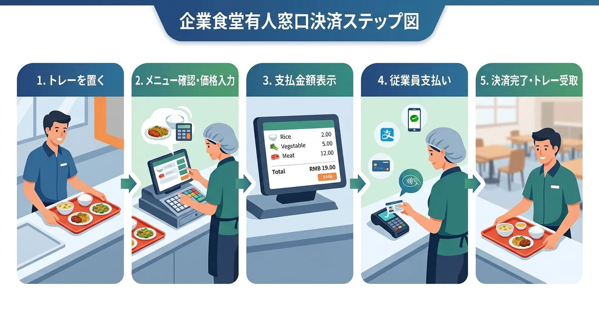
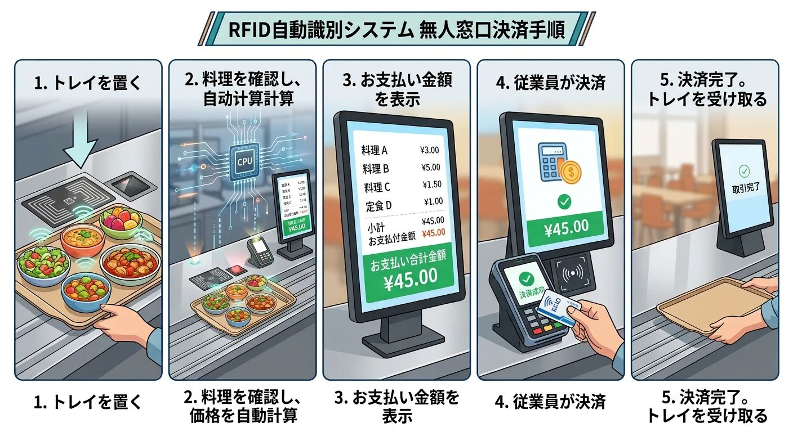
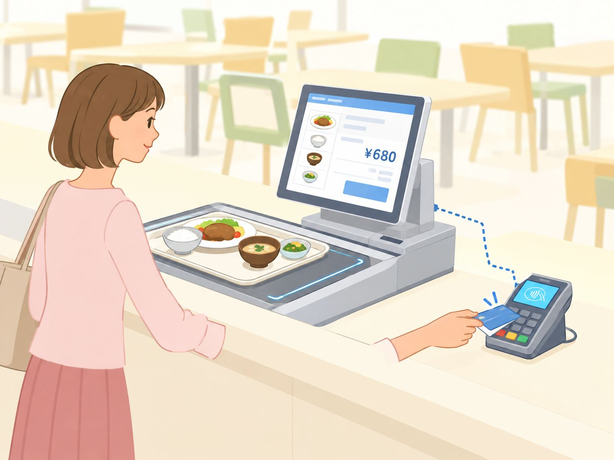
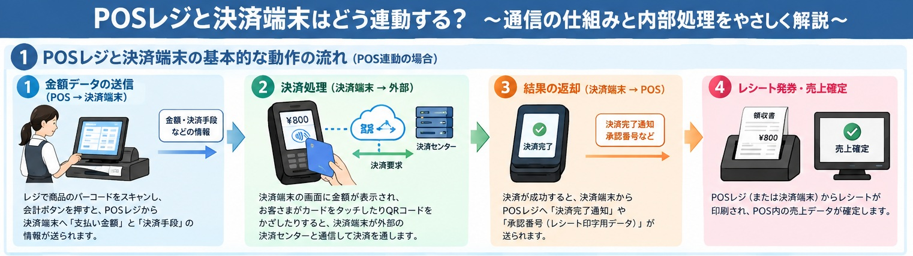
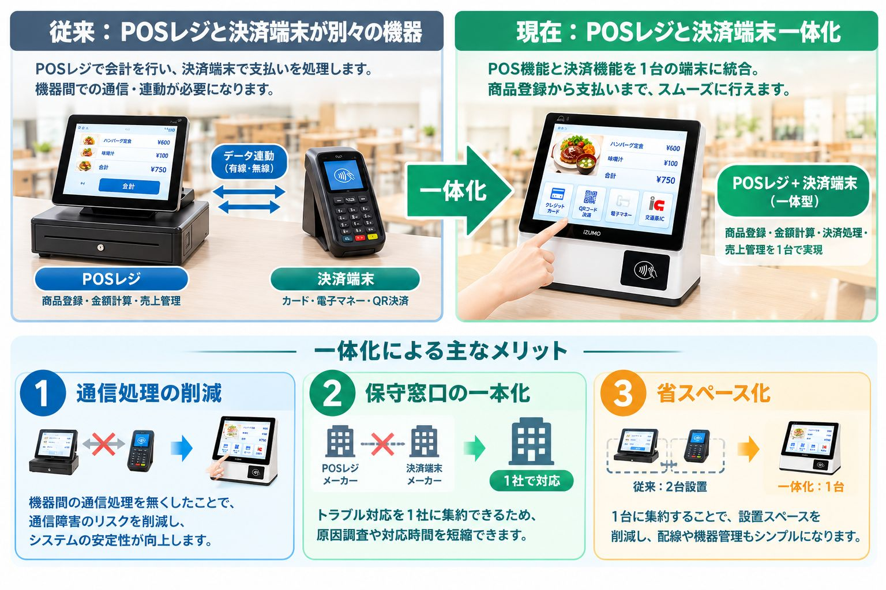
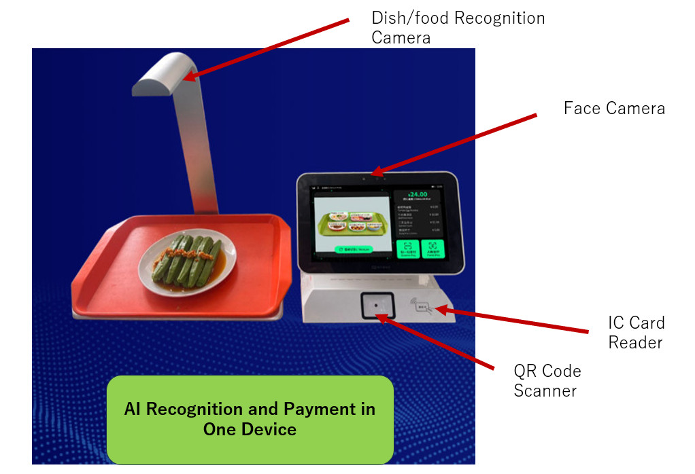
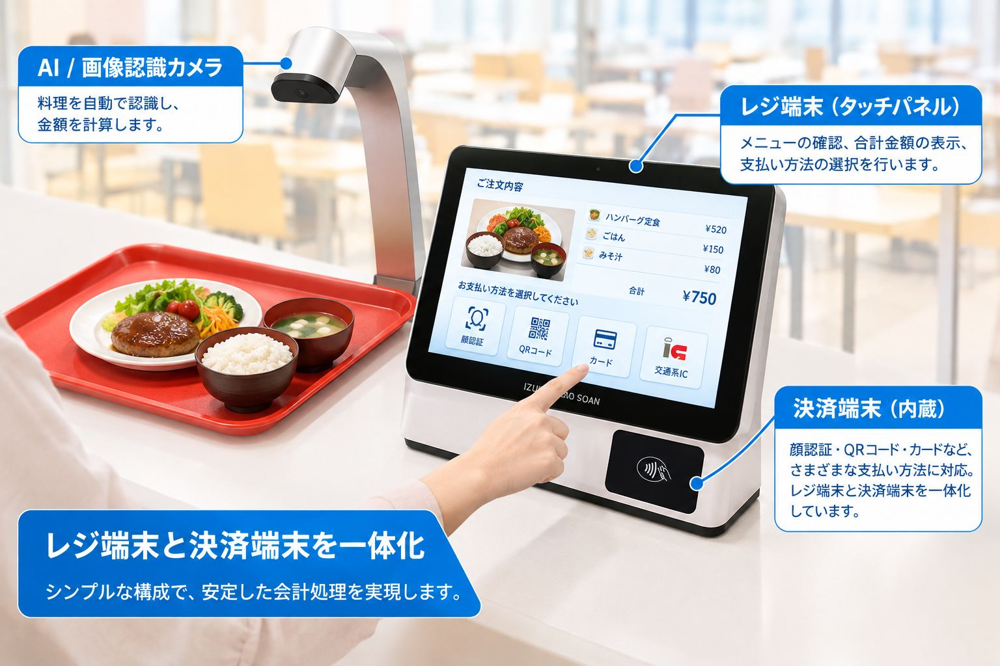

この記事でわかること
- 有人レジ・一般的なオートレジ・レジ決済一体型オートレジの会計の流れと違い
- 一般的なオートレジで見落とされがちな「端末間通信・システム連携」の課題
- 通信障害時にも会計を継続しやすくする設計の考え方
- 決済手数料の負担を抑える選択肢（プリペイド・社内アカウント・給与控除）
社員食堂や大学食堂では、昼食時間に利用者が集中し、レジの待ち時間が長くなることがあります。オートレジは、料理の金額を自動計算することで、会計業務を効率化し、利用者の待ち時間を短縮する仕組みです。
しかし、オートレジの性能は、料理の認識速度だけで決まるわけではありません。レジ端末と決済端末の連携方法、通信障害への対応、決済手数料なども、食堂運営に大きく影響します。
本記事では、有人レジ、一般的なオートレジ、そして弊社が提供するレジ・決済一体型オートレジの仕組みを比較し、それぞれの特徴を解説します。
1. 有人レジの仕組み
要点：有人レジは、レジ担当者が料理を目視で確認して金額を入力し、決済端末で支払いを処理する方式です。確実な一方、昼のピーク時はレジ待ちや入力ミスが発生しやすくなります。
有人レジでは、レジ担当者が料理を確認し、金額を入力して会計を行います。

会計の流れ
- 利用者が料理を載せたトレーをレジ台に置きます。
- レジ担当者が料理の種類を確認し、POSレジに各料理の金額を入力します。
- POS画面に合計金額が表示されます。担当者は利用者に支払い方法を確認し、必要に応じて決済端末に金額を入力します。
- 利用者がカードやQRコードなどを使って支払いを行います。
- 会計が完了したら、利用者はトレーを受け取り、席に移動します。
この方式では、料理の確認と金額入力を人が行うため、利用者が多い時間帯にはレジ待ちが発生しやすくなります。また、入力ミスや担当者の作業負担も課題となります。
2. 一般的なオートレジの仕組み
要点：一般的なオートレジは、RFIDやAI画像認識で料理を自動識別して金額を計算し、レジPOS・連携用PC・決済端末が通信し合って会計します。認識は速い反面、端末間の通信や外部サーバー連携が増え、通信障害時に会計が止まるリスクがあります。
一般的なオートレジでは、RFIDやAI画像認識などの技術を利用して、料理の種類や金額を自動的に計算します。

会計の流れ
- 利用者が料理を載せたトレーをレジ台に置きます。
- RFIDまたはAI画像認識によって料理を識別し、登録された価格をもとに合計金額を計算します。認識条件が整っていれば、約1秒で金額を算出できるシステムもあります。
- レジPOS画面に合計金額が表示されます。レジ側のシステムは、今回の会計データを別のPCなどに送信し、決済処理に必要な金額や注文情報を連携します。
- 利用者がカードやQRコードなどの支払い方法を選択します。PCから決済端末へ金額情報が送られ、決済端末が決済会社のサーバーなどと通信して決済を処理します。決済結果が決済端末からPCへ返され、注文データの支払い状態が更新されます。
- 決済が完了したら、利用者はトレーを受け取り、席に移動します。
見落とされがちな課題：端末間の通信とシステム連携
一般的なオートレジでは、料理認識装置、レジPOS、連携用PC、決済端末など、複数の機器やシステムが連携して動作する構成があります。

この構成では、機器間の通信や外部サーバーとの通信が正常に動作することが重要です。

POSレジと決済端末が連動する仕組みは、次の3点を理解すると分かりやすくなります。
- POSレジは会計金額を計算し、決済端末へ必要な情報を送る。
- 決済端末は決済サービスと通信し、支払いの承認結果を受け取る。
- 決済結果をPOSレジへ返すことで、会計と売上記録を連動させる。
例えば、レジからPCへの注文データ送信や、PCから決済端末への金額連携に障害が発生すると、会計が停止したり、決済結果の確認に時間がかかったりする可能性があります。
また、決済自体は成功していても、その結果がレジ側に正しく反映されない場合には、売上データとの照合や二重決済の確認など、追加の対応が必要になることがあります。
実際に、ある食堂では過去に2回、通信障害によって正常な精算ができない事態が発生し、精算できなかった金額を運営側が負担するケースがありました。
こうした事例からも、食堂のオートレジでは、処理速度だけでなく、通信障害が発生した場合の継続運用や復旧方法が重要だといえます。
3. 弊社が提供するオートレジの仕組み：レジ端末と決済端末を一体化
要点：弊社のオートレジは、レジ機能と決済機能を1台の端末に統合し、PCと決済端末間の金額連携をなくした構成です。これにより構成がシンプルになり、通信障害時の会計継続や決済コストの最適化がしやすくなります。
弊社のオートレジは、レジ機能と決済機能を同じ端末に統合した構成を採用しています。

一体化製品のメリットは、１．レジ端末と決済端末間の通信を無くしたことで、安定性を向上できた。 ２．決済手数料を無くすことが可能です。 社員給与控除や学生のプリペイドは顔認証やQRコードで支払いことが簡単に実現できる。
弊社のRFID式・AI式の製品はすべて、POSレジと決済端末を一体化して設計しています。

会計の流れ
- 利用者が料理を載せたトレーをレジ台に置きます。
- RFIDまたはAI画像認識によって料理を識別し、合計金額を自動計算します。認識条件が整っていれば、約1秒で金額を算出できます。
- レジPOS画面に合計金額が表示され、利用者が支払い方法を選択します。
- 利用者が顔認証、QRコード、カードなど、システムに対応した方法で支払いを行います。レジと決済の処理を同じ端末内で実行するため、別のPCと決済端末との間で金額情報を連携する必要がありません。注文データと決済結果は端末内で記録し、サーバーへ送信します。サーバーとの通信が一時的に途切れた場合でも、送信対象のデータを端末に保持し、通信が回復した後に自動送信する設計が可能です。
- 会計が完了したら、利用者はトレーを受け取り、席に移動します。
対応する支払い方法：顔認証・QRコード・カード
弊社のRFID式・AI式オートレジは、顔認証・QRコード・カードの3種類の支払い方法を端末に内蔵しています。食堂の運用に合わせて、プリペイドや社内アカウントなどの方式も組み合わせられます。

- 顔認証
- QRコード
- カード
4. なぜ弊社はレジ端末と決済端末を一体化したのか
要点：一体化の狙いは2つです。(1)端末間通信をなくして会計処理の安定性を高めること、(2)外部決済サービスへの依存を減らし、食堂運営者の決済コストと運用負担を抑えることです。
弊社が一体型の構成を採用した理由は、大きく2つあります。
理由1：会計処理の安定性を高めるため
食堂のオートレジでは、昼休みなどの限られた時間に、多くの利用者を処理する必要があります。
そのため、料理を素早く認識することだけでなく、会計処理が途中で止まらないことも重要です。
レジ端末と決済端末を一体化すれば、両者の間で金額情報や決済結果をやり取りするための通信をなくせます。さらに、端末内へのデータ保存と通信復旧後の再送信を組み合わせることで、ネットワーク障害への対応力を高められます。
私たちは、単に会計を自動化するだけでなく、食堂が安定して運営できる仕組みを目指しています。
理由2：食堂運営者の決済コストと運用負担を減らすため
外部の決済サービスを利用すると、決済手数料やサービス契約に伴う費用が発生する場合があります。また、特定の決済事業者に依存する構成では、サービスの停止や契約条件の変更などに備えた対策も必要です。
自社端末に決済機能を組み込み、プリペイドや社内アカウントなどの方式を選択できるようにすれば、食堂の運用に適した決済環境を構築できます。
ただし、外部決済サービスを利用しない場合でも、残高管理、不正利用対策、精算管理、システム保守などは必要です。決済方式ごとのコストと運用条件を比較したうえで、最適な構成を選ぶことが大切です。
特徴1：通信障害時にも会計を継続できる設計
弊社のシステムでは、レジ処理と決済処理を端末内で完結させることで、外部サーバーとの通信が一時的に停止しても、対応する処理を端末内で継続できる設計を採用できます。
会計データは端末内に保存し、通信が復旧した後にサーバーへ送信します。これにより、一時的なネットワーク障害が発生しても、データの送信待ちによって会計業務全体が直ちに停止するリスクを軽減できます。
ただし、通信障害時に利用できる決済方法は、決済方式や設定によって異なります。外部の決済会社による承認が必要なクレジットカードやQRコード決済などは、通信が必要になる場合があります。オフライン時に会計を継続するには、プリペイド方式や社内アカウント方式など、通信なしで処理できる仕組みを適切に設計することが重要です。
特徴2：レジと決済の連携をシンプルに
レジ端末と決済端末が別々の場合、両者の間で金額や決済結果をやり取りする仕組みが必要です。
弊社の一体型システムでは、この端末間の通信処理をなくすことができます。
機器間の連携箇所を減らすことで、接続トラブルの発生要因を減らし、保守や障害対応を簡素化できます。
特徴3：決済手数料の負担を抑える選択肢
一般的なキャッシュレス決済では、決済サービスの契約条件に応じて、食堂運営者に決済手数料が発生します。決済手数料率が3％程度の場合、売上規模によっては無視できないコストになります。
例えば、年間キャッシュレス決済売上が5,000万円で、手数料率が3％の場合、年間の手数料は150万円になります。
弊社のシステムでは、決済機能を自社製品に組み込むことで、一般的な外部決済サービスに依存しない運用方式も検討できます。
例えば、次のような方式です。
- プリペイド方式： 利用者が事前にチャージした残高から食事代を差し引く。
- 社内アカウント方式： 利用者の社員IDやアカウントにひも付けて利用額を管理する。
- 給与控除方式： 食堂での利用額を集計し、会社の給与控除などの仕組みと連携する。
これらの方式を適切に導入すれば、外部決済サービスの利用頻度や手数料負担を抑えられる可能性があります。なお、実際のコスト削減効果は、決済方式、運用費用、システム導入費用などによって異なります。
5. まとめ：速いだけでなく、止まりにくいオートレジへ
要点：食堂のオートレジ選びでは、料理認識の速さだけでなく、通信障害への備え・決済コスト・使いやすさを含めたシステム全体で比較することが重要です。
食堂のオートレジを選ぶ際には、料理認識の速度だけでなく、システム全体の構成にも注目する必要があります。
これからの食堂システムに求められるのは、会計を速くするだけではありません。通信障害への備え、運用コストの最適化、利用者にとっての使いやすさを含めて、食堂全体の業務を改善することが重要です。
特に、一体化製品には次の2点で大きな優位性があります。
- 安定性：レジ端末と決済端末間の通信をなくすことで、通信障害の影響を受けにくく、会計処理が止まりにくい構成を実現します。
- 決済コスト：決済機能を自社端末に組み込むことで決済手数料を抑えられ、プリペイド・社内アカウント・給与控除などの運用も選べます。
弊社は、レジ端末と決済端末を一体化したスマート食堂オートレジを通じて、社員食堂や大学食堂の待ち時間短縮と、安定した食堂運営を支援します。
IZUMO SOAN — 食堂の会計を、もっと速く、もっとシンプルに。
まずは無料POCで効果を実感しませんか？
AI画像認識・RFID・計量精算 — お客様の食堂に最適な方式を、実際の環境でテストいただけます。
機器の持ち込み・設置・回収まで当社が対応。費用は一切かかりません。